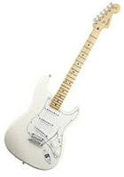
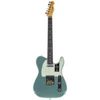
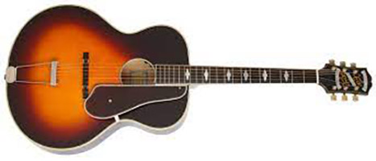
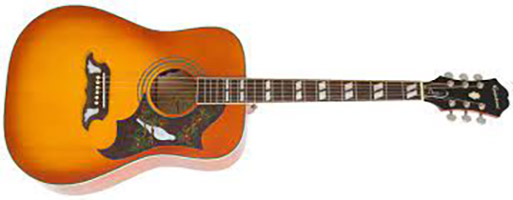
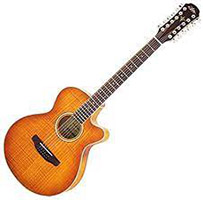
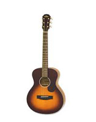
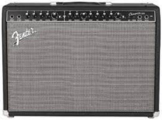

Guitars
Please Contact us for avaliability and a test time

D'Angelico Guitars Deluxe 175 Single Cutaway Hollow Body Electric Guitar
$3,000
| Class of Guitars | Electric |
| Number of Strings | 6 Strings |
| Colour | Rosewood and Matte Midnight |
| Condition | Brand New |
| Outputs | 1x Guitar Jack Output |
| Volume and Tone Controls | 2x Volume and 2x Tone nobs for the different humbucker pick ups |
| Description | Striking in look, feel and sound, the Deluxe 175 is a 16" wide archtop featuring stunning custom features. Gold DA-Tron pick-ups by TV-Jones and a gold Bigsby against the all-new Deluxe Series custom finishes are a remarkable combination. Couple the Bigsby's roller bridge with a graphite nut and locking Grover tuners and stay in tune longer than ever before, while the Deluxe 175's six-way switch brings a massive range of tones. |
| Includes | Guitar, Wammy Bar, Strap |
| Rating | 90 |

D'Angelico Guitars Deluxe DC LE Stopbar Rust Semi-Acoustic Guitar
$2,500
| Class of Guitars | Semi Accoustic/Electric |
| Number of Strings | 6 Strings |
| Colour | Rust and Rosewood |
| Condition | Brand New |
| Outputs | 1x Guitar Jack Output |
| Volume and Tone Controls | 2x Volume and 2x Tone nobs for the different humbucker pick ups |
| Description | An undersized 14-inch-wide body paired with a compact headstock design makes our Mini DC lightweight and exceptionally comfortable for players of every stripe. Paired with a slim C-shape neck and a rosewood fingerboard for unparalleled playability. |
| Includes | Guitar and Strap |
| Rating | 92 |

Fender Stratocaster HSS
$3,000
| Class of Guitars | Electric |
| Number of Strings | 6 Strings |
| Colour | Polar White |
| Condition | Brand New |
| Outputs | 1x Guitar Jack Output |
| Volume and Tone Controls | 1x Volume and 2x Tone nobs, 3 way blade switch for the 3 different coil pickups. |
| Description | Fender presents with the Player Series and this Stratocaster in HSS pickups configuration a basic platform to create your sound, no matter the style. Comfort and versatility are at the heart of the Player series, made in Mexico at the Ensenada factory! |
| Includes | Guitar, Wammy Bar, Strap |
| Rating | 88 |

Fender American Pro II Telecaster Mystic Surf Green RW
$2,000
Reduced by 50% from $4,000
| Class of Guitars | Electric |
| Number of Strings | 6 Strings |
| Colour | Rosewood and Mystic Surf Green |
| Condition | Brand New |
| Outputs | 1x Guitar Jack Output |
| Volume and Tone Controls | 1x Volume and 2x Tone nobs, 3 way blade switch for the 3 different coil pickups. |
| Description | The American Professional II Telecaster draws from more than seventy years of innovation, inspiration and evolution to meet the demands of today’s working player. The American Pro II Telecaster delivers instant familiarity and sonic versatility you’ll feel and hear right away, with broad ranging improvements that add up to nothing less than a new standard for professional instruments. |
| Includes | Guitar and Strap |
| Rating | 96 |

Epiphone De Luxe Round Hole - Vintage Sunburst Accoustic Electric Guitar
$699.00
| Class of Guitars | Semi Accoustic/Electric |
| Number of Strings | 6 Strings |
| Colour | Rosewood and Vintage Sunburst |
| Condition | Brand New |
| Outputs | 1x Guitar Jack Output |
| Volume and Tone Controls | 1x Volume, Bass, Treble, Mid, Notch, and presence nobs for the accoustic pick up |
| Description | you can plug in any Masterbilt Century archtop acoustic/electric into an amp or any PA and hear your guitar’s beautiful and dynamic true acoustic tone on any size stage. For flattop guitarists who have only played old plywood archtops, the sound of a Masterbilt Century guitars will be a revelation. Get ready for a totally new acoustic guitar experience! |
| Includes | Guitar and Strap |
| Rating | 82 |

Epiphone Dove Studio - Violin Burst - Electric/Acooustic Guitar
$799.00
| Class of Guitars | Semi Accoustic/Electric |
| Number of Strings | 6 Strings |
| Colour | Rosewood and Violin Burst |
| Condition | Brand New |
| Outputs | 1x Guitar Jack Output |
| Volume and Tone Controls | 1x Volume, Bass, Treble, Mid, Notch, and presence nobs for the accoustic pick up |
| Description | The classic Dove style acoustic first introduced at the legendary Gibson and Epiphone factory in Kalamazoo in 1962 became one of the first acoustic guitars to become a recognized rock and roll icon. Unplugged, the Epiphone Dove PRO can easily drive an acoustic band. But plugged in, The Dove PRO can hold its own with drums and electric guitars. |
| Includes | Guitar and Strap |
| Rating | 90 |

Aria FET12 SPL - Accoustic Electric 12 String Guitar - Natural
$999.00
| Class of Guitars | Semi Accoustic/Electric |
| Number of Strings | 12 Strings |
| Colour | Rosewood and Natural Wood Gloss |
| Condition | Brand New |
| Outputs | 1x Guitar Jack Output |
| Volume and Tone Controls | 1x Volume, Bass, Treble, Mid, Notch, and presence nobs for the accoustic pick up |
| Description | Preamplifier with electric 12 string acoustic guitar. Attractive bling and spread of the sound |
| Includes | Guitar and Strap |
| Rating | 86 |

Aria Lil Aria 151 Satin Tobacco Sunburst Travel Size Steel String Accoustice Guitar (Little)
$3,000
| Class of Guitars | 1/2 Size Accoustic |
| Number of Strings | 6 Strings |
| Colour | Satin Tobacco Sunburst |
| Condition | Brand New |
| Outputs | 1x Guitar Jack Output |
| Volume and Tone Controls | 1x Volume, Bass, Treble, Mid, Notch, and presence nobs for the accoustic pick up |
| Description | The Aria "LIL" 151 is the perfect travel companion or starter guitar for those who like a classic look. The smaller scale is perfect for both adults and children alike. Play anywhere, anytime, with the "LIL" Aria and have some fun! |
| Includes | Guitar and Strap |
| Rating | 95 |

Fender Champion 100 - 100W 2X12 Combo Amp with FX
$4,000
| Brand | Fender |
| Number of Inputs | 2: Normal and Footswitch |
| Colour | Black |
| Condition | Brand New |
| Outputs | 2x Guitar Jack Output |
| Volume and Tone Controls | 1x Volume, Bass, Treble, FX Level, FX Select, Gain, Volume 2 etc. |
| Description | The 100W, dual-channel Champion 100 features two 12" Special Design speakers, with great amp voices and effects that make it easy to dial up just the right sound — from jazz to country, blues to metal and more. It features two footswitchable independent channels: channel one delivers classic Fender clean tone based on amps like the Twin Reverb, and channel two has selectable amp voicing, including Blackface, British, Metal, Jazz and Tweed, for a wide array of tonal variety. Each channel offers selectable FX, including delay, chorus, reverb and more. |
| Includes | Amplifier, Power Cord, Guitar Lead |
| Rating | 90 |